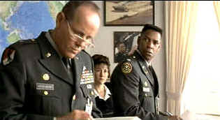

| Courage Under
Fire (SE)/B,B- |
| Fox/1996/117/ANA
1.85 |
Courage
Under
Fire
is put together like the pieces of a puzzle. Had it been a great puzzle, a mind bender of
spectacular resonance, the movie might have been an order of magnitude better. As it stands, the
drama is somewhat diffused by the deliberate cross-cutting between the action under
investigation and the investigation itself.
 |
| We don't need no stinkin reviews. ©Fox |
Edward Zwick is a fine director who consistently
displays a sense of pace and an eye for the dramatic scene. Zwick’s war scenes, whether from the
magnificent Glory or the overblown Legends of the Fall, are dynamic and exciting. Zwick uses the
medium to its fullest, combining the power of his images with nerve crackling sound.
Denzel Washington is always a fascinating actor to watch. The man lights
of the screen with movie star presence, but the role of Lt. Colonel Serling is far from
charismatic. The Washington casting provides a history for the character that might otherwise be
non-existent. Such is the value of a star presence. While the Colonel is in many ways a weak
character, we understand the star will overcome the shortcomings built into the character by the
script. It’s a valuable element in making movies and that’s why there are stars and other
celestial beings plying the acting trade.
The style of Courage
Under
Fire
is reminiscent of Rashomon, the classic Kurosawa film, in which events are retold
differently by various witnesses to an incident. Serling, wrestling with his own misgivings about a
Gulf War decision to open fire
mistakenly on friendly armor, is given the task of investigating the Congressional Medal of Honor
nomination for Captain Karen Walden, killed in action during a different Gulf War engagement.
Gradually, through the process of investigation, Serling comes to terms with his own conduct.
The script by Patrick Sheane Duncan breaks no new ground and some of the
characters are somewhat clichéd. Under
Zwick’s hand, Courage
Under
Fire
is a powerful film that develops beyond the capabilities of the script. He makes the most of the
emotional situations and guides his actors with certainty. Photographed by Roger Deakins, this is a
beautiful looking film. James Horner’s score is occasionally too emotionally revealing.
The image sharpness is rather inconsistent. Mostly penetratingly
clear when focused on Denzel Washington, other close-ups are slightly soft. Color is less than
perfect as well, with a slight smearing in the darker scenes. The battle scenes are quite exciting,
with explosion flashes clean on the dark backgrounds. Fox provides a choice of Dolby Digital 5:1 or
DTS Surround. The DTS decoding is outstanding, with pinpoint directionality of bullets and
explosions. Dialogue is clear and consistent. Bass extension packs good impact.
Packaged as a special edition, Courage Under Fire includes an
intelligent and informative audio commentary from director Edward Zwick. A promotional short
features clips of the actors talking about their roles and some behind the scenes shots of the
filmmaking. It's great to watch grips with shovels providing the swirling dust through which the
actors must escape.
|
|
|
|

Jou Du/A,B-

A sexy Chinese noir. Bold colors paint stirring emotions in a small
provincial town.

Selections from the Feature Archive
include articles on Akira Kurosawa, Frank
Darabont, Blonde Bimbos, Hollywood Street Gangs, or Vietnam: The
Hollywood Pariah, and many more....
Vietnam:
The Hollywood Pariah

During World War II, Hollywood pumped out war movies one after the other. Vietnam was was another
story. As far as Hollywood was concerned it was a pariah.

The
Movie Poster Archive include extensive poster images from the films of stars like Susan Hayward,
Kirk Douglas, Katharine Hepburn and many more. Our featured star is Clark Gable.
 
DVDPlanet is the DVD
incarnation of legendary laser retailer Ken Crane's. Deep discounts and serious service.
 Direct from the corridors of the Home Theater Forum, Home Theater Talk is the
newest place on the Net to discuss everything home theater. Friendly atmosphere and knowledgeable
folks are the secret ingredients. Direct from the corridors of the Home Theater Forum, Home Theater Talk is the
newest place on the Net to discuss everything home theater. Friendly atmosphere and knowledgeable
folks are the secret ingredients.

The home of Francis Ford Coppola's Zoetrope
Studios has more corridors of interest than you might expect.
|